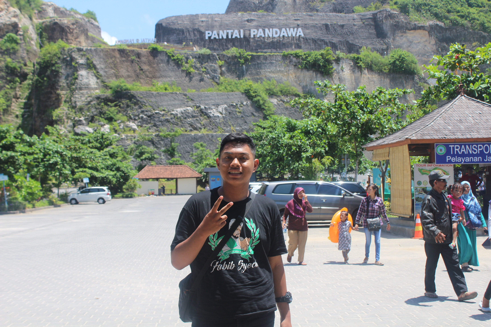

- HOME
-
KEGIATANKU
- KONTAK
INFORMASI

KEGIATANKU
DATA PRIBADI
- NAMA : NUNKI ULIL ALBAB
- TTL : Sidoarjo,31 Maret 2003
- ALAMAT : Ds. Entalsewu Buduran Sidoarjo
- UMUR : 17 Tahun
- HOBI : Sholawatan dan Kuliner
- JENIS KELAMIN : LAKI-LAKI
- AGAMA : Islam
- STATUS : Pelajar
Kegiatanku adalah ketika dirumah melaksanakan pekerjaan rumah dan ketika saya di sekolah saya melakukan kegiatan
pembelajaran,sewaktu dirumah saya melakukan berbagai aktifitas seperti ibadah,membersihkan rumah dan mengerjakan
tugas dirumah .